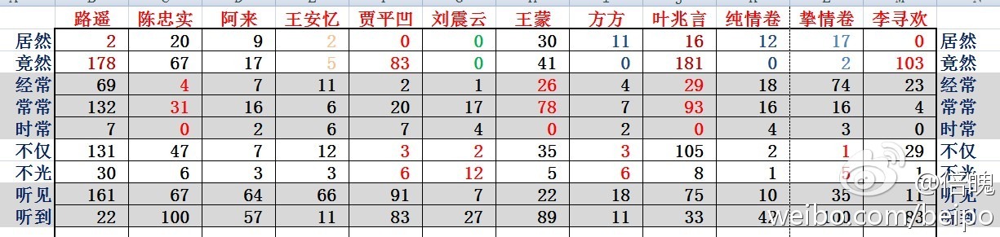

//@刘知远THU: @马少平THU @文光围脖 老师可以看博主的 网页链接 ，其中郭敬明、张悦然都会出现明显翻转（包括有作品用两个词之一、有的作品两个词都不用的情况）。之前我也做过对曹雪芹、鲁迅等作品风格的分析，虚词使用的确可以鉴别作者。但这个博主做的还是太主观，我@倍魄:回复@一根大粉条纸: 再给你看看作家偏好的多样性：贾平凹《秦腔》43万字，“竟然”用了83次，“居然”0次。方方《风景》和《桃花灿烂》9万字，用“居然”11次，用“竟然”0次。王蒙两者没有偏爱，刘震云27万字的《一句顶一万句》完全不用“居然”和“竟然”。 
在newegg上买了个东芝的蓝光播放器。昨天在redbox租了张叠放进去看完之后发现似乎拿不出来了，无论按什么键。打了一通东芝客服，发现都是周末不上班。那盘每天1.62刀的，我可撑不到周一啊。情急之下我把播放器拆了拿出盘来装了回去。盘是出来了，但这播放器可怎么办呢……